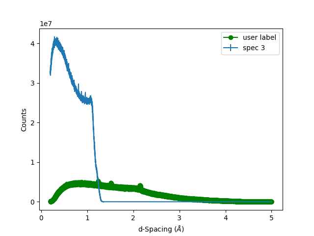
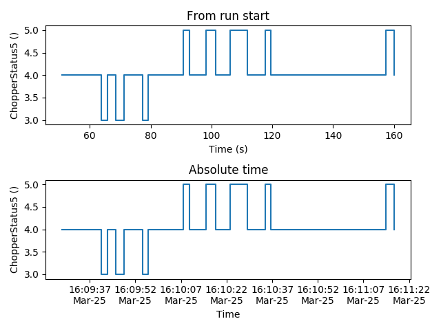
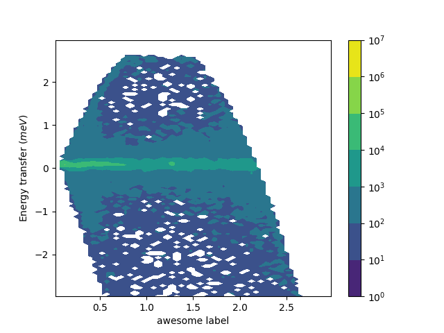
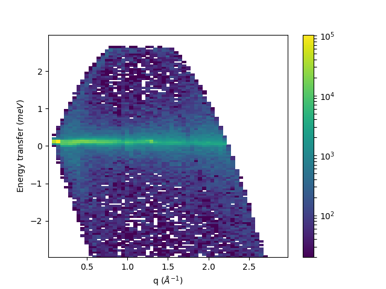
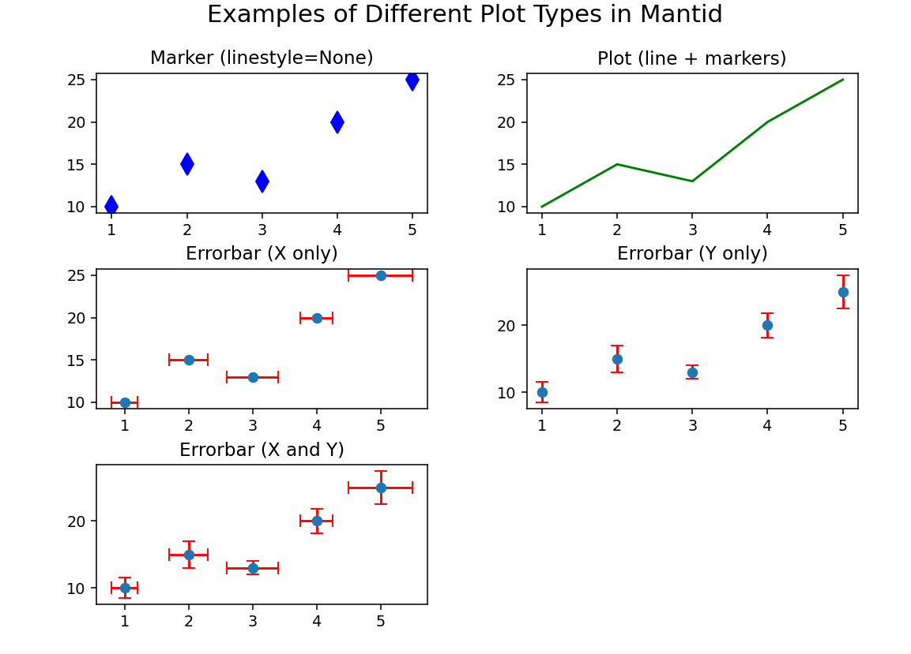

mantid.plots#
The functions in this module are intended to be used with matplotlib’s object oriented abstract program interface (API). matplotlib’s (stateful) functional interface is discouraged by matplotlib. The object oriented API allow for customization as well.
The plotting of a mantid.api.MatrixWorkspace or a
mantid.api.IMDHistoWorkspace can happen in two different ways.
The use of a mantid projection allows most matplotlib-like
experience:
import matplotlib.pyplot as plt
from mantid import plots
#some code here to get a workspace, and x, y, yerr arrays
fig, ax = plt.subplots(subplot_kw={'projection':'mantid'})
ax.errorbar(workspace,'rs',specNum=1) #for workspaces
ax.errorbar(x,y,yerr,'bo') #for arrays
fig.show()
If the mantid projection is not used, the plotting functions take a
matplotlib.axes.Axes and a mantid.api.MatrixWorkspace or
mantid.api.IMDHistoWorkspace, with some keywords that are
specific to Mantid an the type or workspace used. While there are defaults for the
labels, you can easily override them after the initial plotting is
called. A useful reference is matplotlib’s anatomy of a figure.
Note
To run these usage examples please first download the usage data, and add these to your path. In Mantid this is done using Manage User Directories.
All of the examples below can be run with the following imports, but not all are used in all places.
from mantid.simpleapi import mtd, Load, LoadEventNexus, Rebin, ConvertUnits, SofQW, Transpose
from mantid import plots
import matplotlib.pyplot as plt
from matplotlib.colors import LogNorm
First, load some diffraction data and see what the automatic axes will
be using get_axes_labels().
Load(Filename="PG3_733", OutputWorkspace="PG3_733")
print(plots.helperfunctions.get_axes_labels(mtd['PG3_733']))
Which will print the y-label then the labels for all the other
axes as properly escaped for use directly in
matplotlib.axes.Axes.set_xlabel().
('Counts', 'd-Spacing ($\\AA$)', 'Spectrum')
To generate a 1D plots of some spectra with mantid projection:
fig, ax = plt.subplots(subplot_kw={'projection':'mantid'})
ax.plot(mtd['PG3_733'], 'go-', specNum=1, label='user label')
ax.errorbar(mtd['PG3_733'], wkspIndex=2)
ax.legend()
fig.show()
or without:
fig, ax = plt.subplots()
plots.plotfunctions.plot(ax, mtd['PG3_733'], 'go-', specNum=1, label='user label')
plots.plotfunctions.errorbar(ax, mtd['PG3_733'], wkspIndex=2)
ax.legend()
fig.show()

This example demonstrates adding multiple spectra onto a single 1D
plot and overriding some of the default behavior. plot() is a normal
line plot, while errorbar() adds the uncertainties. It should be
warned that every call to one of the plot functions will automatically
annotate the axes with the last one called being the one that takes
effect.
The plot() function also allows
plotting sample logs.
from mantid import plots
import matplotlib.pyplot as plt
w = LoadEventNexus(Filename='CNCS_7860_event.nxs')
fig = plt.figure()
ax1 = fig.add_subplot(211, projection = 'mantid')
ax2 = fig.add_subplot(212, projection = 'mantid')
ax1.plot(w, LogName = 'ChopperStatus5')
ax1.set_title('From run start')
ax2.plot(w, LogName = 'ChopperStatus5', FullTime = True)
ax2.set_title('Absolute time')
fig.tight_layout()
fig.show()

Two common ways to look at 2D plots are contourf() and
pcolormesh(). The difference between these is the
contourf() calculates smooth lines of constant
value, where the pcolormesh() is the actual data
values.
pcolormesh() is similar to pcolor(),
but uses a different mechanism and returns a different object; pcolor returns a PolyCollection
but pcolormesh returns a QuadMesh.
It is much faster, so it is almost always preferred for large arrays.
LoadEventNexus(Filename='CNCS_7860_event.nxs', OutputWorkspace='CNCS_7860_event')
ConvertUnits(InputWorkspace='CNCS_7860_event', OutputWorkspace='CNCS_7860_event', Target='DeltaE', EMode='Direct', EFixed=3)
Rebin(InputWorkspace='CNCS_7860_event', OutputWorkspace='CNCS_7860_event', Params='-3,0.05,3')
SofQW(InputWorkspace='CNCS_7860_event', OutputWorkspace='CNCS_7860_sqw', QAxisBinning='0,0.05,3', EMode='Direct', EFixed=3)
Transpose(InputWorkspace='CNCS_7860_sqw', OutputWorkspace='CNCS_7860_sqw')
fig, ax = plt.subplots(subplot_kw={'projection':'mantid'})
c = ax.contourf(mtd['CNCS_7860_sqw'], norm=LogNorm())
ax.set_xlabel('awesome label')
fig.colorbar(c)
fig.show()

Similarly, showing the actual values with pcolormesh()
fig, ax = plt.subplots(subplot_kw={'projection':'mantid'})
c = ax.pcolormesh(mtd['CNCS_7860_sqw'], norm=LogNorm())
fig.colorbar(c)
fig.show()

A couple of notes about pcolor(),
pcolormesh(),
and pcolorfast():
If the
mantid.api.MatrixWorkspacehas unequal bins, the polygons/meshes will have sides not aligned with the axes. One can override this behavior by using the axisaligned keyword, and setting it to TrueIf the
mantid.api.MatrixWorkspacehas different numbers of bins the above functions will automatically use the axisaligned behavior (cannot be overridden).contour()and the like cannot plot these type of workspaces.
In addition to the mantid projection, there is also the mantid3d projection for 3d plots.
Can be used much the same as the mantid projection, but by instead specifying mantid3d
when giving the projection:
import matplotlib.pyplot as plt
from mantid import plots
#some code here to get a workspace, and x, y, yerr arrays
fig, ax = plt.subplots(subplot_kw={'projection':'mantid3d'})
ax.plot_wireframe(workspace) #for workspaces
ax.plot_wireframe(x,y,z) #for arrays
fig.show()
Matrix Workspace Plotting#
The Matrix Workspace has some additional features that help simplify plotting data. The setPlotType() method allows you to define how a workspace should be visualized when plotting. The following plot types are available:
marker: A scatter plot where data points are displayed as markers without connecting lines. Ideal for visualizing individual data points.
plot: A standard line plot that connects data points using lines. This is the default visualization for continuous data.
errorbar_x: A plot with error bars in the x-direction only. Uses dataX for the x-values, dataY for the y-values, and dataDx for the x-error values.
errorbar_y: A plot with error bars in the y-direction only. Uses dataX for the x-values, dataY for the y-values, and dataE for the y-error values.
errorbar_xy: A plot with error bars in both x- and y-directions. Uses dataX for the x-values, dataY for the y-values, dataDx for the x-error values, and dataE for the y-error values.
These options can be set using:
workspace.setPlotType('marker') # or 'plot', 'errorbar_x', 'errorbar_y', 'errorbar_xy'
workspace.getPlotType() # returns the current plot type

Types of functions#
Informational
get_axes_labels()
1D Plotting
plot()- Plot lines and/or markerserrorbar()- Plot values with errorbarsscatter()- Make a scatter plot
2D Plotting
contour()- Draw contours at specified levelscontourf()- Draw contours at calculated levelspcolor()- Draw a pseudocolor plot of a 2-D arraypcolorfast()- Draw a pseudocolor plot of a 2-D arraypcolormesh()- Draw a quadrilateral meshtripcolor()- Draw a pseudocolor plot of an unstructured triangular gridtricontour()- Draw contours at specified levels on an unstructured triangular gridtricontourf()- Draw contours at calculated levels on an unstructured triangular grid
3D Plotting
plot()- Draws a line plot in 3D spacescatter()- Draws a scatter plot in 3d spaceplot_wireframe()- Draws a wire frame linking all adjacent data plotsplot_surface()- Draws a surface linking all adjacent data pointscontour()- Draws contour lines at specified levels of the datacontourf()- Draws filled contour lines at specified levels of the data
matplotlib demonstrates the difference between uniform and nonuniform grids well in this example
Available Functions#
When using mantid projection#
- class mantid.plots.MantidAxes(*args, **kwargs)#
This class defines the mantid projection for 2d plotting. One chooses this projection using:
import matplotlib.pyplot as plt from mantid import plots fig, ax = plt.subplots(subplot_kw={'projection':'mantid'})
or:
import matplotlib.pyplot as plt from mantid import plots fig = plt.figure() ax = fig.add_subplot(111,projection='mantid')
The mantid projection allows replacing the array objects with mantid workspaces.
- contour(*args, **kwargs)#
If the mantid projection is chosen, it can be used the same as
matplotlib.axes.Axes.contour()for arrays, or it can be used to plotmantid.api.MatrixWorkspaceormantid.api.IMDHistoWorkspace. You can have something like:import matplotlib.pyplot as plt from mantid import plots ... fig, ax = plt.subplots(subplot_kw={'projection':'mantid'}) ax.contour(workspace) #for workspaces ax.contour(x,y,z) #for arrays fig.show()
For keywords related to workspaces, see
plotfunctions.contour()
- contourf(*args, **kwargs)#
If the mantid projection is chosen, it can be used the same as
matplotlib.axes.Axes.contourf()for arrays, or it can be used to plotmantid.api.MatrixWorkspaceormantid.api.IMDHistoWorkspace. You can have something like:import matplotlib.pyplot as plt from mantid import plots ... fig, ax = plt.subplots(subplot_kw={'projection':'mantid'}) ax.contourf(workspace) #for workspaces ax.contourf(x,y,z) #for arrays fig.show()
For keywords related to workspaces, see
plotfunctions.contourf()
- errorbar(*args, **kwargs)#
If the mantid projection is chosen, it can be used the same as
matplotlib.axes.Axes.errorbar()for arrays, or it can be used to plotmantid.api.MatrixWorkspaceormantid.api.IMDHistoWorkspace. You can have something like:import matplotlib.pyplot as plt from mantid import plots ... fig, ax = plt.subplots(subplot_kw={'projection':'mantid'}) ax.errorbar(workspace,'rs',specNum=1) #for workspaces ax.errorbar(x,y,yerr,'bo') #for arrays fig.show()
For keywords related to workspaces, see
plotfunctions.errorbar()
- pcolor(*args, **kwargs)#
If the mantid projection is chosen, it can be used the same as
matplotlib.axes.Axes.pcolor()for arrays, or it can be used to plotmantid.api.MatrixWorkspaceormantid.api.IMDHistoWorkspace. You can have something like:import matplotlib.pyplot as plt from mantid import plots ... fig, ax = plt.subplots(subplot_kw={'projection':'mantid'}) ax.pcolor(workspace) #for workspaces ax.pcolor(x,y,C) #for arrays fig.show()
For keywords related to workspaces, see
plotfunctions.pcolor()
- pcolorfast(*args, **kwargs)#
If the mantid projection is chosen, it can be used the same as
matplotlib.axes.Axes.pcolorfast()for arrays, or it can be used to plotmantid.api.MatrixWorkspaceormantid.api.IMDHistoWorkspace. You can have something like:import matpolotlib.pyplot as plt from mantid import plots ... fig, ax = plt.subplots(subplot_kw={'projection':'mantid'}) ax.pcolorfast(workspace) #for workspaces ax.pcolorfast(x,y,C) #for arrays fig.show()
For keywords related to workspaces, see
plotfunctions.pcolorfast()
- pcolormesh(*args, **kwargs)#
If the mantid projection is chosen, it can be used the same as
matplotlib.axes.Axes.pcolormesh()for arrays, or it can be used to plotmantid.api.MatrixWorkspaceormantid.api.IMDHistoWorkspace. You can have something like:import matplotlib.pyplot as plt from mantid import plots ... fig, ax = plt.subplots(subplot_kw={'projection':'mantid'}) ax.pcolormesh(workspace) #for workspaces ax.pcolormesh(x,y,C) #for arrays fig.show()
For keywords related to workspaces, see
plotfunctions.pcolormesh()
- plot(*args, **kwargs)#
If the mantid projection is chosen, it can be used the same as
matplotlib.axes.Axes.plot()for arrays, or it can be used to plotmantid.api.MatrixWorkspaceormantid.api.IMDHistoWorkspace. You can have something like:import matplotlib.pyplot as plt from mantid import plots ... fig, ax = plt.subplots(subplot_kw={'projection':'mantid'}) ax.plot(workspace,'rs',specNum=1) #for workspaces ax.plot(x,y,'bo') #for arrays fig.show()
For keywords related to workspaces, see
plotfunctions.plot().
- scatter(*args, **kwargs)#
If the mantid projection is chosen, it can be used the same as
matplotlib.axes.Axes.scatter()for arrays, or it can be used to plotmantid.api.MatrixWorkspaceormantid.api.IMDHistoWorkspace. You can have something like:import matplotlib.pyplot as plt from mantid import plots ... fig, ax = plt.subplots(subplot_kw={'projection':'mantid'}) ax.scatter(workspace,'rs',specNum=1) #for workspaces ax.scatter(x,y,'bo') #for arrays fig.show()
For keywords related to workspaces, see
plotfunctions.scatter()
- tripcolor(*args, **kwargs)#
If the mantid projection is chosen, it can be used the same as
matplotlib.axes.Axes.tripcolor()for arrays, or it can be used to plotmantid.api.MatrixWorkspaceormantid.api.IMDHistoWorkspace. You can have something like:import matplotlib.pyplot as plt from mantid import plots ... fig, ax = plt.subplots(subplot_kw={'projection':'mantid'}) ax.tripcolor(workspace) #for workspaces ax.tripcolor(x,y,C) #for arrays fig.show()
For keywords related to workspaces, see
plotfunctions.tripcolor()
- tricontour(*args, **kwargs)#
If the mantid projection is chosen, it can be used the same as
matplotlib.axes.Axes.tricontour()for arrays, or it can be used to plotmantid.api.MatrixWorkspaceormantid.api.IMDHistoWorkspace. You can have something like:import matplotlib.pyplot as plt from mantid import plots ... fig, ax = plt.subplots(subplot_kw={'projection':'mantid'}) ax.tricontour(workspace) #for workspaces ax.tricontour(x,y,z) #for arrays fig.show()
For keywords related to workspaces, see
plotfunctions.tricontour()
- tricontourf(*args, **kwargs)#
If the mantid projection is chosen, it can be used the same as
matplotlib.axes.Axes.tricontourf()for arrays, or it can be used to plotmantid.api.MatrixWorkspaceormantid.api.IMDHistoWorkspace. You can have something like:import matplotlib.pyplot as plt from mantid import plots ... fig, ax = plt.subplots(subplot_kw={'projection':'mantid'}) ax.tricontourf(workspace) #for workspaces ax.tricontourf(x,y,z) #for arrays fig.show()
For keywords related to workspaces, see
plotfunctions.tricontourf()
When using mantid3d projection#
- class mantid.plots.MantidAxes3D(*args, **kwargs)#
This class defines the mantid3d projection for 3d plotting. One chooses this projection using:
import matplotlib.pyplot as plt from mantid import plots fig, ax = plt.subplots(subplot_kw={'projection':'mantid3d'})
or:
import matplotlib.pyplot as plt from mantid import plots fig = plt.figure() ax = fig.add_subplot(111,projection='mantid3d')
The mantid3d projection allows replacing the array objects with mantid workspaces.
- contour(*args, **kwargs)#
If the mantid3d projection is chosen, it can be used the same as
matplotlib.axes.Axes3D.contour()for arrays, or it can be used to plotmantid.api.MatrixWorkspaceormantid.api.IMDHistoWorkspace. You can have something like:import matplotlib.pyplot as plt from mantid import plots ... fig, ax = plt.subplots(subplot_kw={'projection':'mantid3d'}) ax.contour(workspace) #for workspaces ax.contour(x,y,z) #for arrays fig.show()
For keywords related to workspaces, see
plotfunctions3D.contour()
- contourf(*args, **kwargs)#
If the mantid3d projection is chosen, it can be used the same as
matplotlib.axes.Axes3D.contourf()for arrays, or it can be used to plotmantid.api.MatrixWorkspaceormantid.api.IMDHistoWorkspace. You can have something like:import matplotlib.pyplot as plt from mantid import plots ... fig, ax = plt.subplots(subplot_kw={'projection':'mantid3d'}) ax.contourf(workspace) #for workspaces ax.contourf(x,y,z) #for arrays fig.show()
For keywords related to workspaces, see
plotfunctions3D.contourf()
- plot(*args, **kwargs)#
If the mantid3d projection is chosen, it can be used the same as
matplotlib.axes.Axes3D.plot()for arrays, or it can be used to plotmantid.api.MatrixWorkspaceormantid.api.IMDHistoWorkspace. You can have something like:import matplotlib.pyplot as plt from mantid import plots ... fig, ax = plt.subplots(subplot_kw={'projection':'mantid3d'}) ax.plot(workspace) #for workspaces ax.plot(x,y,z) #for arrays fig.show()
For keywords related to workspaces, see
plotfunctions3D.plot3D()
- plot_surface(*args, **kwargs)#
If the mantid3d projection is chosen, it can be used the same as
matplotlib.axes.Axes3D.plot_surface()for arrays, or it can be used to plotmantid.api.MatrixWorkspaceormantid.api.IMDHistoWorkspace. You can have something like:import matplotlib.pyplot as plt from mantid import plots ... fig, ax = plt.subplots(subplot_kw={'projection':'mantid3d'}) ax.plot_surface(workspace) #for workspaces ax.plot_surface(x,y,z) #for arrays fig.show()
For keywords related to workspaces, see
plotfunctions3D.plot_surface()
- plot_wireframe(*args, **kwargs)#
If the mantid3d projection is chosen, it can be used the same as
matplotlib.axes.Axes3D.plot_wireframe()for arrays, or it can be used to plotmantid.api.MatrixWorkspaceormantid.api.IMDHistoWorkspace. You can have something like:import matplotlib.pyplot as plt from mantid import plots ... fig, ax = plt.subplots(subplot_kw={'projection':'mantid3d'}) ax.plot_wireframe(workspace) #for workspaces ax.plot_wireframe(x,y,z) #for arrays fig.show()
For keywords related to workspaces, see
plotfunctions3D.wireframe()
- scatter(*args, **kwargs)#
If the mantid3d projection is chosen, it can be used the same as
matplotlib.axes.Axes3D.scatter()for arrays, or it can be used to plotmantid.api.MatrixWorkspaceormantid.api.IMDHistoWorkspace. You can have something like:import matplotlib.pyplot as plt from mantid import plots ... fig, ax = plt.subplots(subplot_kw={'projection':'mantid3d'}) ax.scatter(workspace) #for workspaces ax.scatter(x,y,z) #for arrays fig.show()
For keywords related to workspaces, see
plotfunctions3D.scatter()
Functions to use when mantid projection is not available#
- mantid.plots.axesfunctions.contour(axes, workspace, *args, **kwargs)#
Essentially the same as
matplotlib.axes.Axes.contour()but calculates the countour levels. Currently this only works with workspaces that have a constant number of bins between spectra.- Parameters:
axes –
matplotlib.axes.Axesobject that will do the plottingworkspace –
mantid.api.MatrixWorkspaceormantid.api.IMDHistoWorkspaceto extract the data fromdistribution –
None(default) asks the workspace.Falsemeans divide by bin width.Truemeans do not divide by bin width. Applies only when the matrix workspace is a histogram.normalization –
None(default) ask the workspace. Applies to MDHisto workspaces. It can override the value from displayNormalizationHisto. It checks only if the normalization is mantid.api.MDNormalization.NumEventsNormalizationindices – Specify which slice of an MDHistoWorkspace to use when plotting. Needs to be a tuple and will be interpreted as a list of indices. You need to use
slice(None)to select which dimensions to plot. e.g. to select the last two axes to plot from a 3D volume useindices=(5, slice(None), slice(None))where the 5 is the bin selected for the first axis.slicepoint – Specify which slice of an MDHistoWorkspace to use when plotting in the dimension units. You need to use
Noneto select which dimension to plot. e.g. to select the last two axes to plot from a 3D volume useslicepoint=(1.0, None, None)where the 1.0 is the value of the dimension selected for the first axis.transpose –
boolto transpose the x and y axes of the plotted dimensions of an MDHistoWorkspace
- mantid.plots.axesfunctions.contourf(axes, workspace, *args, **kwargs)#
Essentially the same as
matplotlib.axes.Axes.contourf()but calculates the countour levels. Currently this only works with workspaces that have a constant number of bins between spectra.- Parameters:
axes –
matplotlib.axes.Axesobject that will do the plottingworkspace –
mantid.api.MatrixWorkspaceormantid.api.IMDHistoWorkspaceto extract the data fromdistribution –
None(default) asks the workspace.Falsemeans divide by bin width.Truemeans do not divide by bin width. Applies only when the matrix workspace is a histogram.normalization –
None(default) ask the workspace. Applies to MDHisto workspaces. It can override the value from displayNormalizationHisto. It checks only if the normalization is mantid.api.MDNormalization.NumEventsNormalizationindices – Specify which slice of an MDHistoWorkspace to use when plotting. Needs to be a tuple and will be interpreted as a list of indices. You need to use
slice(None)to select which dimensions to plot. e.g. to select the last two axes to plot from a 3D volume useindices=(5, slice(None), slice(None))where the 5 is the bin selected for the first axis.slicepoint – Specify which slice of an MDHistoWorkspace to use when plotting in the dimension units. You need to use
Noneto select which dimension to plot. e.g. to select the last two axes to plot from a 3D volume useslicepoint=(1.0, None, None)where the 1.0 is the value of the dimension selected for the first axis.transpose –
boolto transpose the x and y axes of the plotted dimensions of an MDHistoWorkspace
- mantid.plots.axesfunctions.errorbar(axes, workspace, *args, **kwargs)#
Unpack mantid workspace and render it with matplotlib.
argsandkwargsare passed tomatplotlib.axes.Axes.errorbar()after special keyword arguments are removed. This will automatically label the line according to the spectrum number unless specified otherwise.- Parameters:
axes –
matplotlib.axes.Axesobject that will do the plottingworkspace –
mantid.api.MatrixWorkspaceormantid.api.IMDHistoWorkspaceto extract the data fromspecNum – spectrum number to plot if MatrixWorkspace
wkspIndex – workspace index to plot if MatrixWorkspace
distribution –
None(default) asks the global setting.Falsemeans divide by bin width.Truemeans do not divide by bin width. Applies only when the workspace is a MatrixWorkspace histogram.normalize_by_bin_width – Plot the workspace as a distribution. If None default to global setting: config[‘graph1d.autodistribution’]
normalization –
None(default) ask the workspace. Applies to MDHisto workspaces. It can override the value from displayNormalizationHisto. It checks only if the normalization is mantid.api.MDNormalization.NumEventsNormalizationaxis – Specify which axis will be plotted. Use axis=MantidAxType.BIN to plot a bin, and axis=MantidAxType.SPECTRUM to plot a spectrum. The default value is axis=1, plotting spectra by default.
indices – Specify which slice of an MDHistoWorkspace to use when plotting. Needs to be a tuple and will be interpreted as a list of indices. You need to use
slice(None)to select which dimension to plot. e.g. to select the second axis to plot from a 3D volume useindices=(5, slice(None), 10)where the 5/10 are the bins selected for the other 2 axes.slicepoint – Specify which slice of an MDHistoWorkspace to use when plotting in the dimension units. You need to use
Noneto select which dimension to plot. e.g. to select the second axis to plot from a 3D volume useslicepoint=(1.0, None, 2.0)where the 1.0/2.0 are the dimension selected for the other 2 axes.
For matrix workspaces with more than one spectra, either
specNumorwkspIndexneeds to be specified. Giving both will generate aRuntimeError. There is no similar keyword for MDHistoWorkspaces. These type of workspaces have to have exactly one non integrated dimension
- mantid.plots.axesfunctions.pcolor(axes, workspace, *args, **kwargs)#
Essentially the same as
matplotlib.axes.Axes.pcolor()- Parameters:
axes –
matplotlib.axes.Axesobject that will do the plottingworkspace –
mantid.api.MatrixWorkspaceormantid.api.IMDHistoWorkspaceto extract the data fromdistribution –
None(default) asks the workspace.Falsemeans divide by bin width.Truemeans do not divide by bin width. Applies only when the matrix workspace is a histogram.normalization –
None(default) ask the workspace. Applies to MDHisto workspaces. It can override the value from displayNormalizationHisto. It checks only if the normalization is mantid.api.MDNormalization.NumEventsNormalizationindices – Specify which slice of an MDHistoWorkspace to use when plotting. Needs to be a tuple and will be interpreted as a list of indices. You need to use
slice(None)to select which dimensions to plot. e.g. to select the last two axes to plot from a 3D volume useindices=(5, slice(None), slice(None))where the 5 is the bin selected for the first axis.slicepoint – Specify which slice of an MDHistoWorkspace to use when plotting in the dimension units. You need to use
Noneto select which dimension to plot. e.g. to select the last two axes to plot from a 3D volume useslicepoint=(1.0, None, None)where the 1.0 is the value of the dimension selected for the first axis.axisaligned –
False(default). IfTrue, or if the workspace has a variable number of bins, the polygons will be aligned with the axestranspose –
boolto transpose the x and y axes of the plotted dimensions of an MDHistoWorkspace
- mantid.plots.axesfunctions.pcolorfast(axes, workspace, *args, **kwargs)#
Essentially the same as
matplotlib.axes.Axes.pcolorfast()- Parameters:
axes –
matplotlib.axes.Axesobject that will do the plottingworkspace –
mantid.api.MatrixWorkspaceormantid.api.IMDHistoWorkspaceto extract the data fromdistribution –
None(default) asks the workspace.Falsemeans divide by bin width.Truemeans do not divide by bin width. Applies only when the matrix workspace is a histogram.normalization –
None(default) ask the workspace. Applies to MDHisto workspaces. It can override the value from displayNormalizationHisto. It checks only if the normalization is mantid.api.MDNormalization.NumEventsNormalizationindices – Specify which slice of an MDHistoWorkspace to use when plotting. Needs to be a tuple and will be interpreted as a list of indices. You need to use
slice(None)to select which dimensions to plot. e.g. to select the last two axes to plot from a 3D volume useindices=(5, slice(None), slice(None))where the 5 is the bin selected for the first axis.slicepoint – Specify which slice of an MDHistoWorkspace to use when plotting in the dimension units. You need to use
Noneto select which dimension to plot. e.g. to select the last two axes to plot from a 3D volume useslicepoint=(1.0, None, None)where the 1.0 is the value of the dimension selected for the first axis.axisaligned –
False(default). IfTrue, or if the workspace has a variable number of bins, the polygons will be aligned with the axestranspose –
boolto transpose the x and y axes of the plotted dimensions of an MDHistoWorkspace
- mantid.plots.axesfunctions.pcolormesh(axes, workspace, *args, **kwargs)#
Essentially the same as
matplotlib.axes.Axes.pcolormesh().- Parameters:
axes –
matplotlib.axes.Axesobject that will do the plottingworkspace –
mantid.api.MatrixWorkspaceormantid.api.IMDHistoWorkspaceto extract the data fromdistribution –
None(default) asks the workspace.Falsemeans divide by bin width.Truemeans do not divide by bin width. Applies only when the matrix workspace is a histogram.normalization –
None(default) ask the workspace. Applies to MDHisto workspaces. It can override the value from displayNormalizationHisto. It checks only if the normalization is mantid.api.MDNormalization.NumEventsNormalizationindices – Specify which slice of an MDHistoWorkspace to use when plotting. Needs to be a tuple and will be interpreted as a list of indices. You need to use
slice(None)to select which dimensions to plot. e.g. to select the last two axes to plot from a 3D volume useindices=(5, slice(None), slice(None))where the 5 is the bin selected for the first axis.slicepoint – Specify which slice of an MDHistoWorkspace to use when plotting in the dimension units. You need to use
Noneto select which dimension to plot. e.g. to select the last two axes to plot from a 3D volume useslicepoint=(1.0, None, None)where the 1.0 is the value of the dimension selected for the first axis.axisaligned –
False(default). IfTrue, or if the workspace has a variable number of bins, the polygons will be aligned with the axestranspose –
boolto transpose the x and y axes of the plotted dimensions of an MDHistoWorkspace
- mantid.plots.axesfunctions.plot(axes, workspace, *args, **kwargs)#
Unpack mantid workspace and render it with matplotlib.
argsandkwargsare passed tomatplotlib.axes.Axes.plot()after special keyword arguments are removed. This will automatically label the line according to the spectrum number unless specified otherwise.- Parameters:
axes –
matplotlib.axes.Axesobject that will do the plottingworkspace –
mantid.api.MatrixWorkspaceormantid.api.IMDHistoWorkspaceto extract the data fromspecNum – spectrum number to plot if MatrixWorkspace
wkspIndex – workspace index to plot if MatrixWorkspace
distribution –
None(default) asks the workspace.Falsemeans divide by bin width.Truemeans do not divide by bin width. Applies only when the workspace is a MatrixWorkspace histogram.normalization –
None(default) ask the workspace. Applies to MDHisto workspaces. It can override the value from displayNormalizationHisto. It checks only if the normalization is mantid.api.MDNormalization.NumEventsNormalizationnormalize_by_bin_width –
None(default) ask the workspace. It can override the value from distribution. Is implemented so get_normalize_by_bin_width only need to be run once.LogName – if specified, it will plot the corresponding sample log. The x-axis of the plot is the time difference between the log time and the first value of the proton_charge log (if available) or the sample log’s first time.
StartFromLog – False by default. If True the time difference will be from the sample log’s first time, even if proton_charge log is available.
FullTime – False by default. If true, the full date and time will be plotted on the axis instead of the time difference
ExperimentInfo – for MD Workspaces with multiple
mantid.api.ExperimentInfois the ExperimentInfo object from which to extract the log. It’s 0 by defaultaxis – Specify which axis will be plotted. Use axis=MantidAxType.BIN to plot a bin, and axis=MantidAxType.SPECTRUM to plot a spectrum. The default value is axis=1, plotting spectra by default.
indices – Specify which slice of an MDHistoWorkspace to use when plotting. Needs to be a tuple and will be interpreted as a list of indices. You need to use
slice(None)to select which dimension to plot. e.g. to select the second axis to plot from a 3D volume useindices=(5, slice(None), 10)where the 5/10 are the bins selected for the other 2 axes.slicepoint – Specify which slice of an MDHistoWorkspace to use when plotting in the dimension units. You need to use
Noneto select which dimension to plot. e.g. to select the second axis to plot from a 3D volume useslicepoint=(1.0, None, 2.0)where the 1.0/2.0 are the dimension selected for the other 2 axes.
For matrix workspaces with more than one spectra, either
specNumorwkspIndexneeds to be specified. Giving both will generate aRuntimeError. There is no similar keyword for MDHistoWorkspaces. These type of workspaces have to have exactly one non integrated dimension
- mantid.plots.axesfunctions.scatter(axes, workspace, *args, **kwargs)#
Unpack mantid workspace and render it with matplotlib.
argsandkwargsare passed tomatplotlib.axes.Axes.scatter()after special keyword arguments are removed. This will automatically label the line according to the spectrum number unless specified otherwise.- Parameters:
axes –
matplotlib.axes.Axesobject that will do the plottingworkspace –
mantid.api.MatrixWorkspaceormantid.api.IMDHistoWorkspaceto extract the data fromspecNum – spectrum number to plot if MatrixWorkspace
wkspIndex – workspace index to plot if MatrixWorkspace
distribution –
None(default) asks the workspace.Falsemeans divide by bin width.Truemeans do not divide by bin width. Applies only when the workspace is a MatrixWorkspace histogram.normalization –
None(default) ask the workspace. Applies to MDHisto workspaces. It can override the value from displayNormalizationHisto. It checks only if the normalization is mantid.api.MDNormalization.NumEventsNormalizationindices – Specify which slice of an MDHistoWorkspace to use when plotting. Needs to be a tuple and will be interpreted as a list of indices. You need to use
slice(None)to select which dimension to plot. e.g. to select the second axis to plot from a 3D volume useindices=(5, slice(None), 10)where the 5/10 are the bins selected for the other 2 axes.slicepoint – Specify which slice of an MDHistoWorkspace to use when plotting in the dimension units. You need to use
Noneto select which dimension to plot. e.g. to select the second axis to plot from a 3D volume useslicepoint=(1.0, None, 2.0)where the 1.0/2.0 are the dimension selected for the other 2 axes.
For matrix workspaces with more than one spectra, either
specNumorwkspIndexneeds to be specified. Giving both will generate aRuntimeError. There is no similar keyword for MDHistoWorkspaces. These type of workspaces have to have exactly one non integrated dimension
- mantid.plots.axesfunctions.tricontour(axes, workspace, *args, **kwargs)#
Essentially the same as
mantid.plots.contour(), but works for non-uniform grids. Currently this only works with workspaces that have a constant number of bins between spectra or with MDHistoWorkspaces.- Parameters:
axes –
matplotlib.axes.Axesobject that will do the plottingworkspace –
mantid.api.MatrixWorkspaceormantid.api.IMDHistoWorkspaceto extract the data fromdistribution –
None(default) asks the workspace.Falsemeans divide by bin width.Truemeans do not divide by bin width. Applies only when the matrix workspace is a histogram.indices – Specify which slice of an MDHistoWorkspace to use when plotting. Needs to be a tuple and will be interpreted as a list of indices. You need to use
slice(None)to select which dimensions to plot. e.g. to select the last two axes to plot from a 3D volume useindices=(5, slice(None), slice(None))where the 5 is the bin selected for the first axis.slicepoint – Specify which slice of an MDHistoWorkspace to use when plotting in the dimension units. You need to use
Noneto select which dimension to plot. e.g. to select the last two axes to plot from a 3D volume useslicepoint=(1.0, None, None)where the 1.0 is the value of the dimension selected for the first axis.normalization –
None(default) ask the workspace. Applies to MDHisto workspaces. It can override the value from displayNormalizationHisto. It checks only if the normalization is mantid.api.MDNormalization.NumEventsNormalizationtranspose –
boolto transpose the x and y axes of the plotted dimensions of an MDHistoWorkspace
See
matplotlib.axes.Axes.tricontour()for more information.
- mantid.plots.axesfunctions.tricontourf(axes, workspace, *args, **kwargs)#
Essentially the same as
mantid.plots.contourf(), but works for non-uniform grids. Currently this only works with workspaces that have a constant number of bins between spectra or with MDHistoWorkspaces.- Parameters:
axes –
matplotlib.axes.Axesobject that will do the plottingworkspace –
mantid.api.MatrixWorkspaceormantid.api.IMDHistoWorkspaceto extract the data fromdistribution –
None(default) asks the workspace.Falsemeans divide by bin width.Truemeans do not divide by bin width. Applies only when the matrix workspace is a histogram.normalization –
None(default) ask the workspace. Applies to MDHisto workspaces. It can override the value from displayNormalizationHisto. It checks only if the normalization is mantid.api.MDNormalization.NumEventsNormalizationindices – Specify which slice of an MDHistoWorkspace to use when plotting. Needs to be a tuple and will be interpreted as a list of indices. You need to use
slice(None)to select which dimensions to plot. e.g. to select the last two axes to plot from a 3D volume useindices=(5, slice(None), slice(None))where the 5 is the bin selected for the first axis.slicepoint – Specify which slice of an MDHistoWorkspace to use when plotting in the dimension units. You need to use
Noneto select which dimension to plot. e.g. to select the last two axes to plot from a 3D volume useslicepoint=(1.0, None, None)where the 1.0 is the value of the dimension selected for the first axis.transpose –
boolto transpose the x and y axes of the plotted dimensions of an MDHistoWorkspace
See
matplotlib.axes.Axes.tricontourf()for more information.
- mantid.plots.axesfunctions.tripcolor(axes, workspace, *args, **kwargs)#
To be used with non-uniform grids. Currently this only works with workspaces that have a constant number of bins between spectra or with MDHistoWorkspaces.
- Parameters:
axes –
matplotlib.axes.Axesobject that will do the plottingworkspace –
mantid.api.MatrixWorkspaceormantid.api.IMDHistoWorkspaceto extract the data fromdistribution –
None(default) asks the workspace.Falsemeans divide by bin width.Truemeans do not divide by bin width. Applies only when the matrix workspace is a histogram.indices – Specify which slice of an MDHistoWorkspace to use when plotting. Needs to be a tuple and will be interpreted as a list of indices. You need to use
slice(None)to select which dimensions to plot. e.g. to select the last two axes to plot from a 3D volume useindices=(5, slice(None), slice(None))where the 5 is the bin selected for the first axis.slicepoint – Specify which slice of an MDHistoWorkspace to use when plotting in the dimension units. You need to use
Noneto select which dimension to plot. e.g. to select the last two axes to plot from a 3D volume useslicepoint=(1.0, None, None)where the 1.0 is the value of the dimension selected for the first axis.normalization –
None(default) ask the workspace. Applies to MDHisto workspaces. It can override the value from displayNormalizationHisto. It checks only if the normalization is mantid.api.MDNormalization.NumEventsNormalizationtranspose –
boolto transpose the x and y axes of the plotted dimensions of an MDHistoWorkspace
See
matplotlib.axes.Axes.tripcolor()for more information.
Functions to use when mantid3d projection is not available#
- mantid.plots.axesfunctions3D.contour(axes, workspace, *args, **kwargs)#
Contour plots
- Parameters:
axes – class:matplotlib.axes.Axes3D object that will do the plotting
workspace –
mantid.api.MatrixWorkspaceormantid.api.IMDHistoWorkspaceto extract the data fromextend3d – Whether to extend contour in 3D (default: False)
stride – Stride (step size) for extending contour
zdir – The direction to use: x, y or z (default)
offset – If specified plot a projection of the contour lines on this position in plane normal to zdir
indices – Specify which slice of an MDHistoWorkspace to use when plotting. Needs to be a tuple and will be interpreted as a list of indices. You need to use
slice(None)to select which dimensions to plot. e.g. to select the last two axes to plot from a 3D volume useindices=(5, slice(None), slice(None))where the 5 is the bin selected for the first axis.slicepoint – Specify which slice of an MDHistoWorkspace to use when plotting in the dimension units. You need to use
Noneto select which dimension to plot. e.g. to select the last two axes to plot from a 3D volume useslicepoint=(1.0, None, None)where the 1.0 is the value of the dimension selected for the first axis.
- mantid.plots.axesfunctions3D.contourf(axes, workspace, *args, **kwargs)#
Filled Contour plots
- Parameters:
axes – class:matplotlib.axes.Axes3D object that will do the plotting
workspace –
mantid.api.MatrixWorkspaceormantid.api.IMDHistoWorkspaceto extract the data fromzdir – The direction to use: x, y or z (default)
offset – If specified plot a projection of the filled contour on this position in plane normal to zdir
indices – Specify which slice of an MDHistoWorkspace to use when plotting. Needs to be a tuple and will be interpreted as a list of indices. You need to use
slice(None)to select which dimensions to plot. e.g. to select the last two axes to plot from a 3D volume useindices=(5, slice(None), slice(None))where the 5 is the bin selected for the first axis.slicepoint – Specify which slice of an MDHistoWorkspace to use when plotting in the dimension units. You need to use
Noneto select which dimension to plot. e.g. to select the last two axes to plot from a 3D volume useslicepoint=(1.0, None, None)where the 1.0 is the value of the dimension selected for the first axis.
- mantid.plots.axesfunctions3D.plot(axes, workspace, *args, **kwargs)#
3D plots - line plots
- Parameters:
axes – class:matplotlib.axes.Axes3D object that will do the plotting
workspace –
mantid.api.MatrixWorkspaceormantid.api.IMDHistoWorkspaceto extract the data fromzdir – Which direction to use as z (‘x’, ‘y’ or ‘z’) when plotting a 2D set.
indices – Specify which slice of an MDHistoWorkspace to use when plotting. Needs to be a tuple and will be interpreted as a list of indices. You need to use
slice(None)to select which dimension to plot. e.g. to select the second axis to plot from a 3D volume useindices=(5, slice(None), 10)where the 5/10 are the bins selected for the other 2 axes.slicepoint – Specify which slice of an MDHistoWorkspace to use when plotting in the dimension units. You need to use
Noneto select which dimension to plot. e.g. to select the second axis to plot from a 3D volume useslicepoint=(1.0, None, 2.0)where the 1.0/2.0 are the dimension selected for the other 2 axes.
- mantid.plots.axesfunctions3D.plot_surface(axes, workspace, *args, **kwargs)#
Surface plots
- Parameters:
axes – class:matplotlib.axes.Axes3D object that will do the plotting
workspace –
mantid.api.MatrixWorkspaceormantid.api.IMDHistoWorkspaceto extract the data fromrstride – Array row stride (step size)
cstride – Array column stride (step size)
rcount – Use at most this many rows, defaults to 100 (vs matplotlib default of 50)
ccount – Use at most this many columns, defaults to 100 (vs matplotlib default of 50)
color – Color of the surface patches
cmap – A colormap for the surface patches.
norm – An instance of Normalize to map values to colors
vmin – Minimum value to map
vmax – Maximum value to map
shade – Whether to shade the facecolors
facecolors – Face colors for the individual patches
indices – Specify which slice of an MDHistoWorkspace to use when plotting. Needs to be a tuple and will be interpreted as a list of indices. You need to use
slice(None)to select which dimensions to plot. e.g. to select the last two axes to plot from a 3D volume useindices=(5, slice(None), slice(None))where the 5 is the bin selected for the first axis.slicepoint – Specify which slice of an MDHistoWorkspace to use when plotting in the dimension units. You need to use
Noneto select which dimension to plot. e.g. to select the last two axes to plot from a 3D volume useslicepoint=(1.0, None, None)where the 1.0 is the value of the dimension selected for the first axis.
- mantid.plots.axesfunctions3D.plot_wireframe(axes, workspace, *args, **kwargs)#
Wire-frame plot
- Parameters:
axes – class:matplotlib.axes.Axes3D object that will do the plotting
workspace –
mantid.api.MatrixWorkspaceormantid.api.IMDHistoWorkspaceto extract the data fromrstride – Array row stride (step size), defaults to 1
cstride – Array column stride (step size), defaults to 1
rcount – Use at most this many rows, defaults to 50
ccount – Use at most this many columns, defaults to 50
indices – Specify which slice of an MDHistoWorkspace to use when plotting. Needs to be a tuple and will be interpreted as a list of indices. You need to use
slice(None)to select which dimensions to plot. e.g. to select the last two axes to plot from a 3D volume useindices=(5, slice(None), slice(None))where the 5 is the bin selected for the first axis.slicepoint – Specify which slice of an MDHistoWorkspace to use when plotting in the dimension units. You need to use
Noneto select which dimension to plot. e.g. to select the last two axes to plot from a 3D volume useslicepoint=(1.0, None, None)where the 1.0 is the value of the dimension selected for the first axis.
- mantid.plots.axesfunctions3D.scatter(axes, workspace, *args, **kwargs)#
Scatter plots
- Parameters:
axes – class:matplotlib.axes.Axes3D object that will do the plotting
workspace –
mantid.api.MatrixWorkspaceormantid.api.IMDHistoWorkspaceto extract the data fromzdir – Which direction to use as z (‘x’, ‘y’ or ‘z’) when plotting a 2D set.
s – Size in points^2. It is a scalar or an array of the same length as x and y.
c – A color. c can be a single color format string, or a sequence of color specifications of length N, or a sequence of N numbers to be mapped to colors using the cmap and norm specified via kwargs (see below). Note that c should not be a single numeric RGB or RGBA sequence because that is indistinguishable from an array of values to be colormapped. c can be a 2-D array in which the rows are RGB or RGBA, however, including the case of a single row to specify the same color for all points.
depthshade – Whether or not to shade the scatter markers to give the appearance of depth. Default is True.
indices – Specify which slice of an MDHistoWorkspace to use when plotting. Needs to be a tuple and will be interpreted as a list of indices. You need to use
slice(None)to select which dimensions to plot. e.g. to select the last two axes to plot from a 3D volume useindices=(5, slice(None), slice(None))where the 5 is the bin selected for the first axis.slicepoint – Specify which slice of an MDHistoWorkspace to use when plotting in the dimension units. You need to use
Noneto select which dimension to plot. e.g. to select the last two axes to plot from a 3D volume useslicepoint=(1.0, None, None)where the 1.0 is the value of the dimension selected for the first axis.
Helper functions#
- mantid.plots.datafunctions.boundaries_from_points(input_array)#
The function tries to guess bin boundaries from bin centers
- Parameters:
input_array – a
numpy.ndarrayof bin centers
- mantid.plots.datafunctions.get_axes_labels(workspace, indices=None, normalize_by_bin_width=True, use_latex=True)#
Get axis labels from a Workspace2D or an MDHistoWorkspace Returns a tuple. The first element is the quantity label, such as “Intensity” or “Counts”. All other elements in the tuple are labels for axes. Some of them are latex formatted already.
If MDWorkspace then the last element will be the values selected by the indices, to be set as title.
- Parameters:
workspace –
mantid.api.MatrixWorkspaceormantid.api.IMDHistoWorkspaceindices
normalize_by_bin_width – bool: Plotting workspace normalized by bin width
use_latex – bool: return y-unit label in Latex form
- mantid.plots.datafunctions.get_distribution(workspace, **kwargs)#
Determine whether or not the data is a distribution. If the workspace is a distribution return true, else the value in kwargs wins. Applies to Matrix workspaces only :param workspace:
mantid.api.MatrixWorkspaceto extract the data from
- mantid.plots.datafunctions.get_matrix_2d_data(workspace, distribution, histogram2D=False, transpose=False)#
Get all data from a Matrix workspace that has the same number of bins in every spectrum. It is used for 2D plots
- Parameters:
workspace – Matrix workspace to extract the data from
distribution – if False, and the workspace contains histogram data, the intensity will be divided by the x bin width
histogram2D – flag that specifies if the coordinates in the output are -bin centers (such as for contour) for False, or -bin edges (such as for pcolor) for True.
Returns x,y,z 2D arrays
- mantid.plots.datafunctions.get_md_data(workspace, normalization, indices=None, withError=False)#
Generic function to extract data from an MDHisto workspace
- Parameters:
workspace –
mantid.api.IMDHistoWorkspacecontaining datanormalization – if
mantid.api.MDNormalization.NumEventsNormalizationit will divide intensity by the number of corresponding MDEventsindices – slice indices to select data
withError – flag for if the error is calculated. If False, err is returned as None
returns a tuple containing bin boundaries for each dimension, the (maybe normalized) signal and error arrays
- mantid.plots.datafunctions.get_md_data1d(workspace, normalization, indices=None)#
Function to transform data in an MDHisto workspace with exactly one non-integrated dimension into arrays of bin centers, data, and error, to be used in 1D plots (plot, scatter, errorbar)
- mantid.plots.datafunctions.get_md_data2d_bin_bounds(workspace, normalization, indices=None, transpose=False)#
Function to transform data in an MDHisto workspace with exactly two non-integrated dimension into arrays of bin boundaries in each dimension, and data. To be used in 2D plots (pcolor, pcolorfast, pcolormesh)
Note: return coordinates are 1d vectors. Use numpy.meshgrid to generate 2d versions
- mantid.plots.datafunctions.get_md_data2d_bin_centers(workspace, normalization, indices=None, transpose=False)#
Function to transform data in an MDHisto workspace with exactly two non-integrated dimension into arrays of bin centers in each dimension, and data. To be used in 2D plots (contour, contourf, tricontour, tricontourf, tripcolor)
Note: return coordinates are 1d vectors. Use numpy.meshgrid to generate 2d versions
- mantid.plots.datafunctions.get_normalization(md_workspace, **kwargs)#
Gets the normalization flag of an MDHistoWorkspace. For workspaces derived similar to MSlice/Horace, one needs to average data, the so-called “number of events” normalization.
- Parameters:
md_workspace –
mantid.api.IMDHistoWorkspaceto extract the data from
- mantid.plots.datafunctions.get_spectrum(workspace, wkspIndex, normalize_by_bin_width, withDy=False, withDx=False)#
Extract a single spectrum and process the data into a frequency
- Parameters:
workspace – a Workspace2D or an EventWorkspace
wkspIndex – workspace index
normalize_by_bin_width – flag to divide the data by bin width. The same effect can be obtained by running the ConvertToDistribution v1 algorithm
withDy – if True, it will return the error in the “counts”, otherwise None
Dx (with) – if True, and workspace has them, it will return errors in the x coordinate, otherwise None
Note that for workspaces containing bin boundaries, this function will return the bin centers for x. To be used in 1D plots (plot, scatter, errorbar)
- mantid.plots.datafunctions.get_uneven_data(workspace, distribution)#
Function to get data for uneven workspace2Ds, such as that pcolor, pcolorfast, and pcolormesh will plot axis aligned rectangles
- Parameters:
workspace – a workspace2d
distribution – if False, and the workspace contains histogram data, the intensity will be divided by the x bin width
Returns three lists. Each element in the x list is an array of boundaries for a spectra. Each element in the y list is a 2 element array with the extents of a particular spectra. The z list contains arrays of intensities at bin centers
- mantid.plots.datafunctions.get_wksp_index_dist_and_label(workspace, axis=MantidAxType.SPECTRUM, **kwargs)#
Get workspace index, whether the workspace is a distribution, and label for the spectrum
- Parameters:
workspace – a Workspace2D or an EventWorkspace
axis – The axis on which we’re operating
kwargs – Keyword arguments passed to the plot function, passed by reference as it is mutated
- mantid.plots.datafunctions.points_from_boundaries(input_array)#
The function returns bin centers from bin boundaries
- Parameters:
input_array – a
numpy.ndarrayof bin boundaries